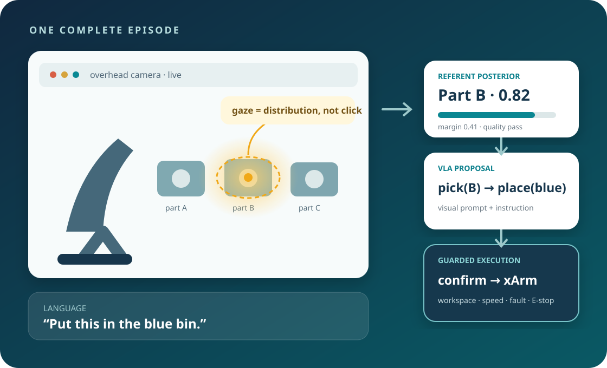
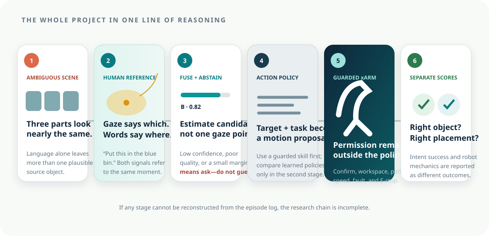
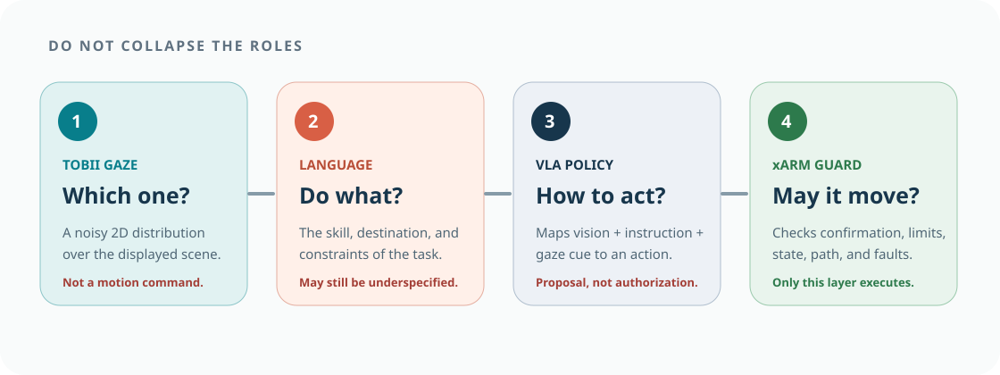
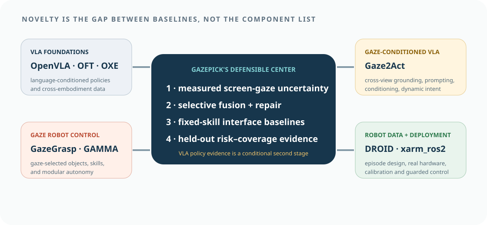

Before motion: identify intent
The system asks which visible object the operator means. Tobii and language reduce ambiguity, but uncertainty can still remain. This stage ends in either a proposed referent or abstention.
Gaze × language × VLA × physical xArm
GazePick studies a concrete industrial interaction: several similar parts are visible in a robot-camera feed, so language alone cannot reliably identify “this one.” Tobii gaze narrows the source-object referent, language specifies the operation and destination, a VLA proposes the action, and a guarded xArm executes only after uncertainty and safety checks.

How to use this atlas
The pages follow the dependency structure of the project. A team member can begin without robotics or eye-tracking background, then reach an implementable architecture, dataset contract, evaluation protocol, and shared execution plan.
Pick-and-place, screen gaze, referring expressions, VLA policies, uncertainty, and guarded autonomy.
02 · DEFINEOne complete episode, interface states, target confirmation, clarification, and recoverable failures.
03 · BUILDCoordinate transforms, temporal fusion, candidate masks, policy input, xArm control, and synchronization.
04 · TESTLanguage-only, classical gaze, frozen VLA, adapted VLA, and explicit-click comparisons.
90-second visual tour
The project is easier to understand as a chain of six decisions. Each stage has a different input, output, and failure mode; skipping a stage makes the final result impossible to interpret.

The system asks which visible object the operator means. Tobii and language reduce ambiguity, but uncertainty can still remain. This stage ends in either a proposed referent or abstention.
The VLA describes how the task may proceed. Confirmation and the xArm guard independently decide whether the proposal is fresh, reachable, bounded, and safe enough for the restricted experiment.
Referent correctness, grasp mechanics, placement, time, clarification, and model condition are stored separately. That distinction reveals whether gaze, VLA, or robot mechanics caused the outcome.
Operational problem
High-mix, low-volume manufacturing and logistics cells change products and layouts frequently. Similar fasteners, connectors, cartons, or subassemblies can occupy the same view. Naming every visual attribute is slow, sometimes impossible, and fragile when objects move.
“Pick the silver connector” can match three instances. Longer descriptions increase verbal effort and still depend on shared spatial vocabulary.
A mouse or coordinate entry can identify the target, but it forces a hand and task switch. Repeated verbal confirmation adds latency.
A policy may execute a mechanically valid grasp on the wrong object. Motion success and intent success must therefore be scored separately.
Three visually similar parts are arranged in a bin; a blue and an orange destination tray sit within the xArm workspace. The operator looks at the middle part and says, “Put this in the blue bin.” The system estimates a distribution over all visible candidates, highlights its proposed referent, requests confirmation when needed, then performs a constrained pick-and-place.
Exact research question
The project matters only if gaze–language fusion improves the interaction beyond simpler alternatives and if VLA adaptation adds value beyond a classical gaze interface or a frozen visual prompt.
In cluttered scenes containing similar objects, does uncertainty-aware fusion of screen-based Tobii gaze and language reduce target-selection time and wrong-object picks on a physical xArm, compared with language-only and classical gaze-to-object interfaces—and does xArm-specific VLA adaptation add value beyond gaze prompting alone?
System semantics
Scientific and safety confusion begins when gaze, language, policy, and robot authority are treated as interchangeable. GazePick keeps their meanings and failure modes separate.

One complete episode
The task is intentionally narrow. A credible end-to-end episode is more valuable than a broad demo with unclear ground truth.
Record Tobii calibration error at task-relevant screen locations. Confirm that the camera image rectangle and any letterboxing are known.
Randomize candidate identities, layout, and destination positions while keeping all objects inside the guarded xArm workspace.
Aggregate valid gaze samples over a short, preregistered window around the referring utterance; timestamp audio and transcript.
Integrate the gaze distribution over candidate masks, combine it with language compatibility, and expose confidence plus the top-two margin.
Highlight the proposed source and destination. If quality, confidence, or margin fails, ask the operator to look again, speak more specifically, or use the click fallback.
The VLA proposes an action chunk or a parameterized pick/place skill. The xArm guard validates the path and executes at restricted speed.
Record referent correctness, grasp, transport, placement, latency, clarifications, intervention, and all quality/fault states.
Research position
Gaze2Act demonstrated gaze-conditioned VLA manipulation on a real Unitree G1 in 2026. GazePick must not claim novelty from merely adding gaze to a VLA. Its contribution is narrower and conditional.

A reproducible Tobii-to-camera mapping with per-session uncertainty and quality-aware object posteriors.
A policy that asks for clarification when confidence or top-two margin is inadequate, rather than treating gaze as a click.
A physical comparison that quantifies whether lightweight VLA adaptation improves over frozen prompting and classical gaze snapping.
Evidence across visual similarity, clutter, gaze quality, novel layouts, objects, and users—including negative results.
Closest visual precedent
These external materials are prior work and platform references, not GazePick results. They prevent the team from rediscovering an existing claim and provide concrete implementation vocabulary.
Cross-view gaze grounding, visual prompting, and action-level conditioning on a real humanoid robot.
An open 7B VLA trained on 970k robot episodes, with documented custom-data and parameter-efficient adaptation paths.
Definition of success
The hackathon output should work in front of an audience, but the research output must also explain why it worked, when it fails, and whether the VLA is earning its complexity.